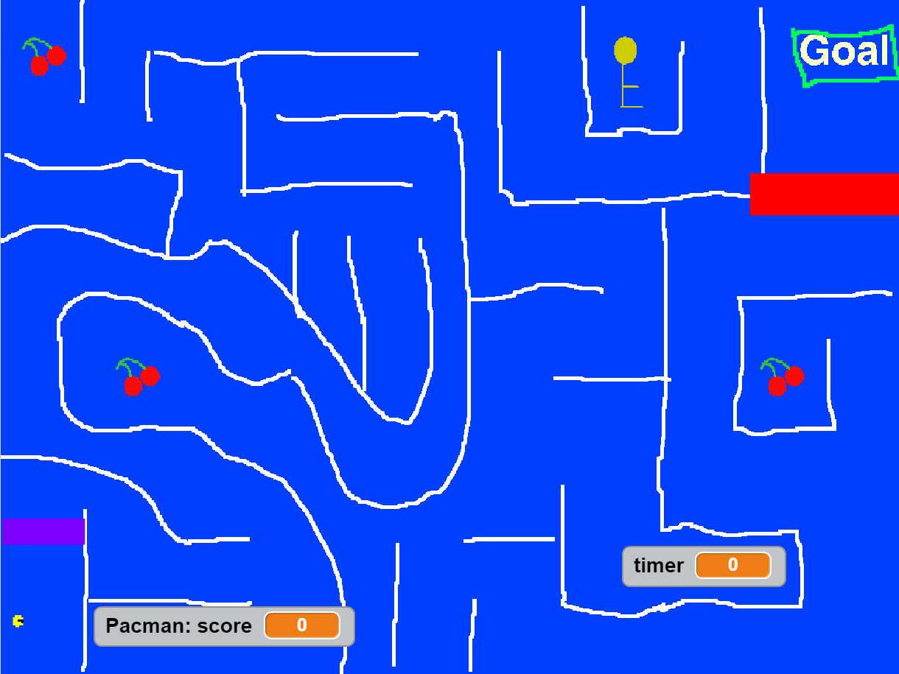
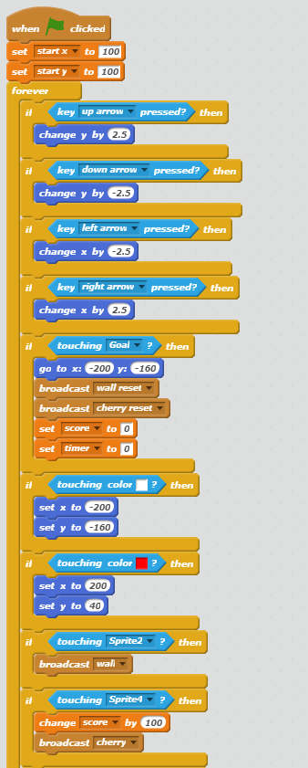
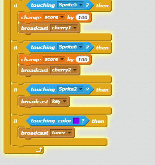

This next project was done by my partner Jon Jon and I, we created a pac-man themed maze, in this maze you collect cherries for bonus points and collect a key to open up the gate for the exit, we also added a timer to the maze.
We created this code for our character based off of pac-man which allows him to move, collect items, get reset, and complete the maze.
 